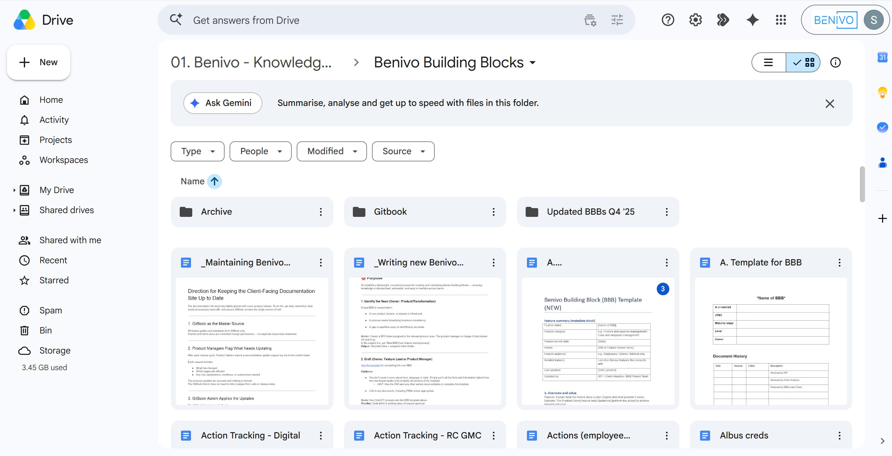
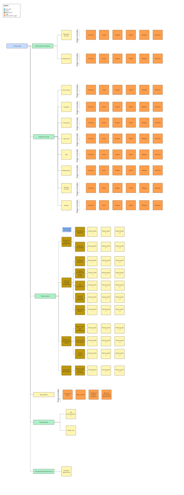
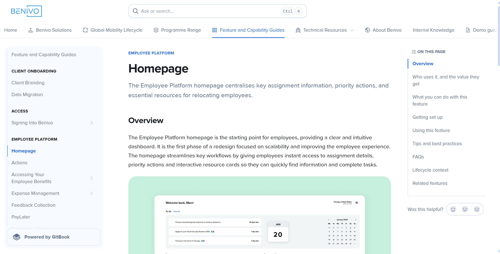
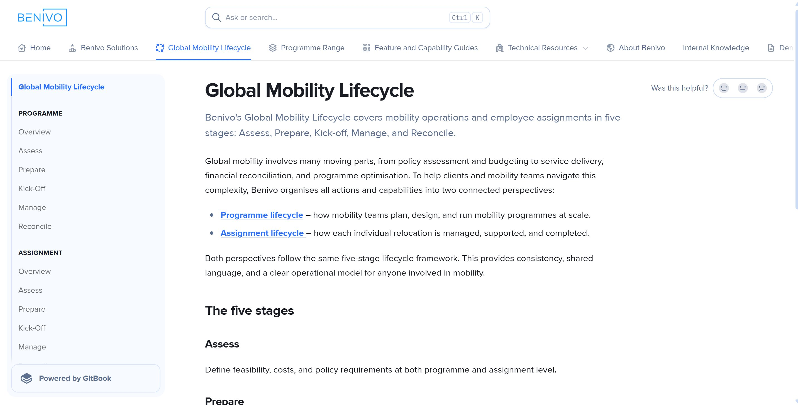

Building a knowledge hub from the inside out
The brief was to turn Benivo's product documentation into a client-facing knowledge hub in Gitbook. The source material: messy.
Situation
Benivo's product knowledge was scattered across Google Docs, poorly migrated Notion pages, and people's heads. What existed had once been consistent but drifted with each change of ownership. Useful content sat alongside outdated content, and content written for an internal audience in ways that would confuse or mislead a client.
The business needed something clients could actually use: a structured, navigable hub, organised around how people actually work rather than how the product is built.

Task
I came in at the early stages of a project that had been scoped but not built. There was a Gitbook instance, a rough IA, and a deadline. What was needed was a content system that could serve clients, prospects and internal teams, handle complex permissions across different audience types, and scale without depending on me to hold it together.
Action
The feature guide structure came from the questions CSMs were actually fielding. Rather than building pages around how the product was organised internally, I designed a page template that would deliver what the audience needed to know: what the feature is, who it applies to, how to use it, and what to watch out for. Practical, scannable, consistent across every page.
I used a Jobs to Be Done framework as a guiding principle across the hub, so clients could find features based on the problem they were trying to solve at a given stage of their programme. Each guide was mapped to the relevant stages of Benivo's mobility lifecycle: Assess, Prepare, Kick-off, Manage, Reconcile.

With the structure defined, I used AI to scale production. I fed the existing source material into the template, reviewed every output before publishing, and made the judgment calls about what belonged in this knowledge hub and what did not. The AI handled the transformation, the editorial decisions stayed with me. That saved time and made SME reviews more efficient. The consistent template meant they could fact-check quickly rather than wade through unstructured drafts.
Beyond the feature guides, I built the other pieces a knowledge hub needs. A homepage, solutions overview pages, and a release notes process that had not previously existed in client-facing form. I also worked with the technical team on API documentation, where the audience and register needed handling differently.


Result
The hub launched with 70+ feature guides and a publishing SLA of under 24 hours from request to live. Month-on-month visitor numbers have grown consistently since launch. CSMs report fewer repeat feature questions and a noticeable increase in feature enquiries from clients wanting to get more out of their Benivo accounts.
The structured, governed knowledge base has also become part of the foundation for Benivo's AI support tooling. Better content documentation means more accurate AI responses. The two projects reinforce each other.
Benivo is a global mobility and relocation platform.